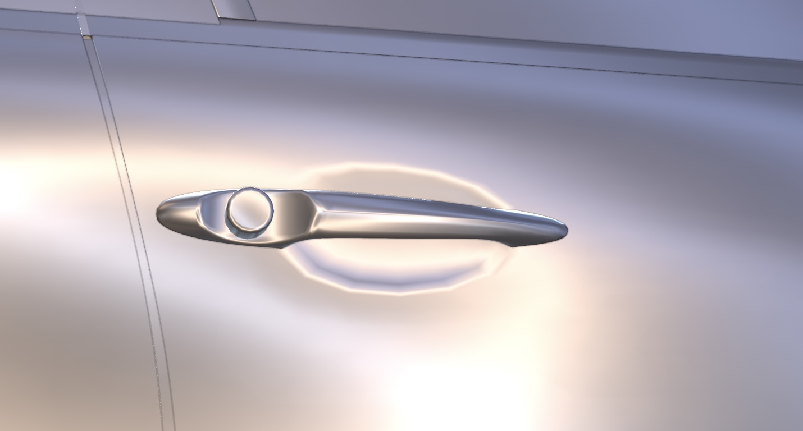
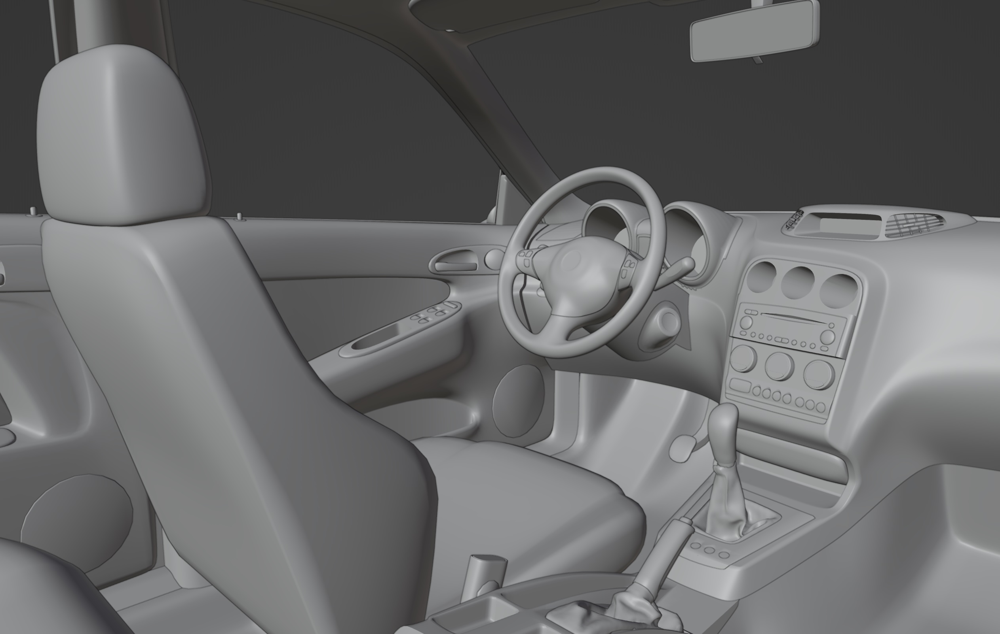
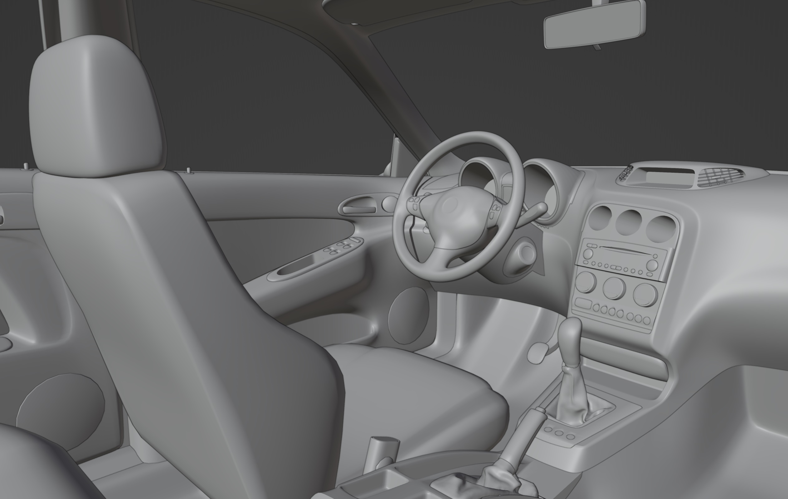
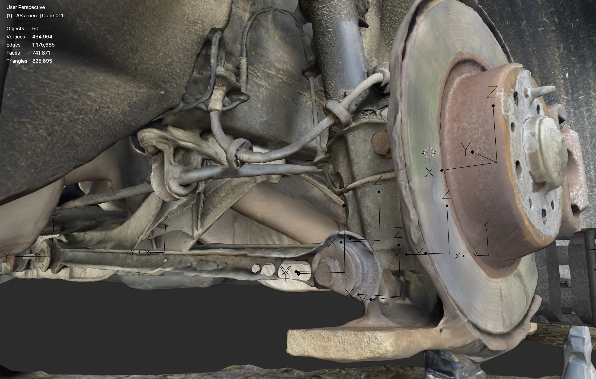
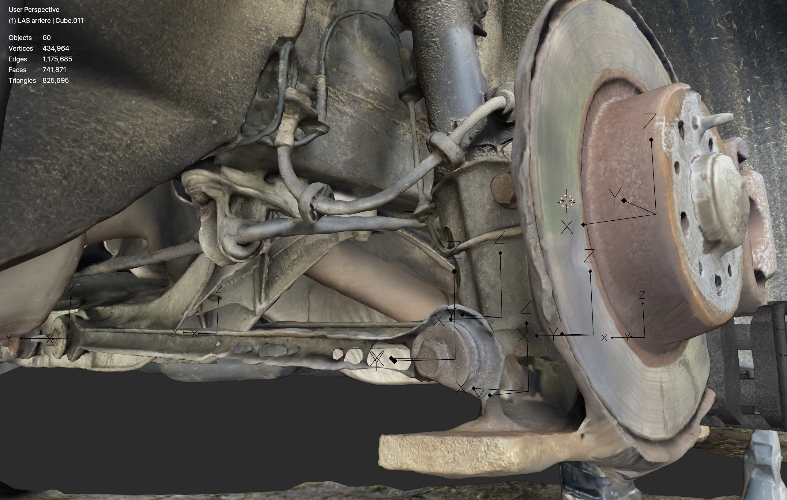
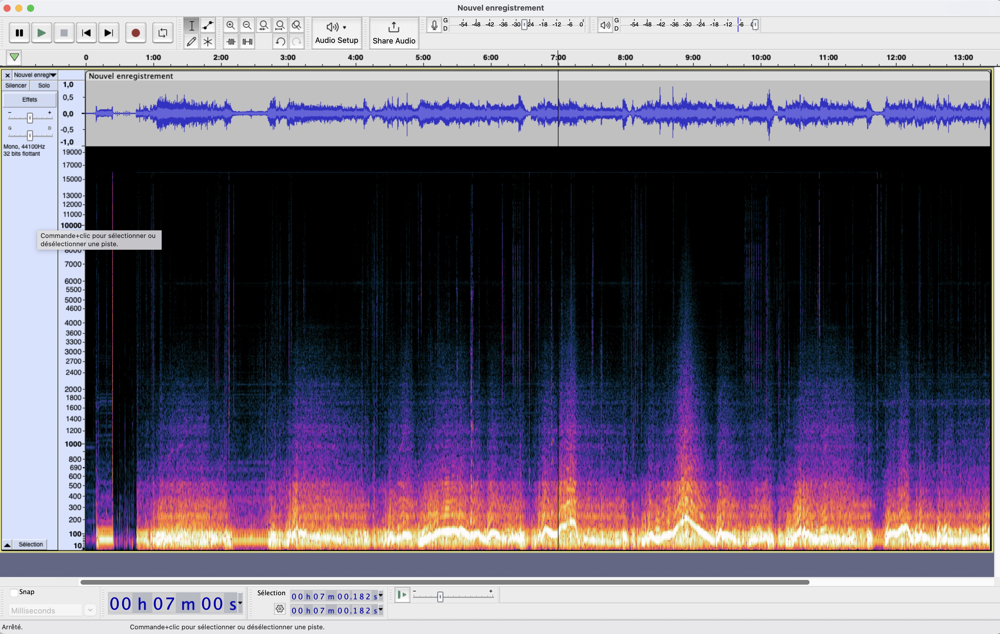

Modélisation de mon Alfa Romeo 156
日本語版はこちら

L'un de mes projets personnels a consisté à modéliser ma voiture pour le jeu de simulation Assetto Corsa.
Cette Alfa Romeo 156 est amusante à conduire grâce à son excellent moteur et à sa suspension unique,
et j'ai essayé de retranscrire fidèlement ces caractéristiques dans ma reconstitution.
Voici un aperçu des différentes étapes que j'ai suivies pour atteindre cet objectif.
Modélisation 3D
J'ai créé mon propre modèle 3D de la voiture à partir de zéro, car je voulais apprendre la modélisation 3D, je voulais que le résultat soit personnalisé pour Assetto Corsa, et il n'existait aucun modèle 3D de qualité de la voiture en ligne sur lequel baser mon travail.
J'ai utilisé la photogrammerie pour créer une base sur laquelle j'ai pu modéliser à l'aide de Blender.
Même si je m'intéressais davantage à la modélisation physique, je trouve cette voiture très belle et il était donc important pour moi de reproduire fidèlement son apparence.


Le plus grand challenge de la modélisation du maillage a été pour moi de concilier les grandes courbes fluides avec des détails à haute fréquence dans le "subdivision workflow" de Blender.
L'ajout de détails dans une zone déformait les courbes plus grandes et donnait un aspect instable aux panneaux.
Sur les portes avant, par exemple, la géométrie de la poignée de porte entrait en conflit avec la grande courbure du côté de la voiture.
J'ai utilisé le modificateur Shrinkwrap pour maintenir les zones environnantes en place, et ainsi pouvoir modéliser les détails les plus fins tout en conservant les courbes environnantes dans leur forme d'origine.
La topologie n'est toujours pas parfaite, mais grâce au Shrinkwrap, le résultat semble correct.
Pour la géométrie intérieure, le même processus de photogrammerie a été utilisé.
 


Modélisation de la physique
Au début, il m'a été difficile de modéliser avec précision la physique de la voiture, car je ne savais pas où trouver des données autres que celles contenues dans le manuel d'atelier. Au fil du temps, j'ai découvert les pages eLearn et ePER de Fiat, où j'ai pu trouver les rigidités de ressort, les plages d'amortisseurs, les diamètres des barres anti-roulis et le poids des pièces.
Afin de modéliser avec précision la géométrie des suspensions, j'ai scanné celles-ci à l'aide de la photogrammétrie, comme illustré ci-dessous.
Cette voiture est équipée d'une configuration multibras asymétrique Alfa à l'arrière. Les bras sont conçu de manière à varier considérablement la pince en fonction de la course des roues, ce qui confère à la voiture une direction passive des roues arrière.
 

Au départ, j'espérais pouvoir estimer la rigidité de la barre anti-roulis et des ressorts en utilisant l'IMU de mon téléphone pour recueillir des données sur le tangage et le roulis de la voiture sous l'effet d'accélérations longitudinales et latérales. Mais au final, tous les paramètres comportaient trop d'incertitudes pour que je puisse en tirer des conclusions concrètes.
Dans la version finale, j'ai fini par trouver la raideur réelle des ressorts en consultant la documentation Fiat, et j'ai calculé la rigidité des barres anti-roulis à partir de leur géométrie.

Le catalogue Fiat ePER contient des informations sur le poids de toutes les pièces de la voiture.
J'ai créé un projet SwiftUI pour les localiser, et ainsi estimer le centre de gravité, ainsi que les moments d'inertie en roulis, en lacet et en tangage.
J'ai utilisé la bibliothèque C mdbtools pour extraire les informations de la base de données du catalogue.

Capture son du moteur
Je trouvais qu'il était important d'avoir un son de moteur authentique et de bonne qualité, car les mauvais sons de moteur ressortent et donnent l'impression qu'un mod n'est pas qualitatif.
Dans Assetto Corsa, j'ai constaté que la qualité du son du moteur final dépendait presque entièrement de la qualité de la capture sonore.

Pour capturer le son dans l'habitacle, j'ai simplement enregistré à partir du microphone de mon ordinateur après l'avoir placé sur le siège passager.
Pour le son extérieur, j'ai d'abord enregistré le bruit du moteur depuis le bord de la route, en roulant à différents régimes et charges moteur.
Le problème, c'est que depuis le bord de la route, le bruit du moteur d'une voiture de série comme la mienne est généralement couvert par le bruit des pneus,
et je n'arrivais pas séparer le bruit du moteur de celui des pneus dans Audacity.

Pour résoudre partiellement ce problème, j'ai convaincu un de mes amis de s'asseoir dans mon coffre afin d'enregistrer les sons près de l'échappement.
C'était étonnamment confortable selon lui.
L'enregistrement est utilisé partiellement dans le son en caméra poursuite, mais ce n'était pas une solution idéale : enregistrer près de l'échappement introduisait du bruit provenant du flux d'air des gaz d'échappement,
mais éloigner le microphone introduisait des bruits de vent.
Dans l'ensemble, je suis mitigé quant aux résultats. Les sons intérieurs sont corrects, mais manquent de dynamique et semblent étouffés.
Les sons extérieurs sont meilleurs, clairement reconnaissables, mais certains problèmes subsistent.
Le bruit du vent est audible à haut régime et la boucle est perceptible dans certains échantillons.
Conclusion
J'ai beaucoup appris au cours du développement de ce mod.
Je pensais avoir fait du bon travail dès ma première tentative, alors qu'en réalité, la version initiale et la version finale sont presque totalement différentes.
Au final, je suis très satisfait du résultat.
Voici un lien vers la page de téléchargement.
L'objectif de cette page est d'illustrer concrètement ma passion pour les voitures et la dynamique du véhicule.
Merci de m'avoir accordé votre temps.
- Contacts :
- bastian.cataldi@free.fr
- +33 (0)7 83 79 67 25